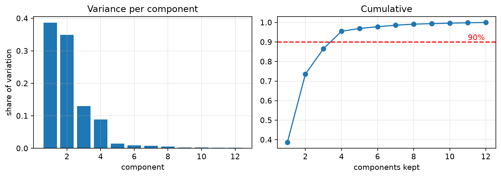

flowchart LR
D["original table<br/>1,000,000 rows × 200 cols"]
D --> A["<b>dimensionality</b><br/>1,000,000 × 5"]
D --> B["<b>numerosity</b><br/>100,000 × 200"]
D --> C["<b>cube aggregation</b><br/>1,200 × 4<br/>(months × regions)"]
7 Session 6 — Data Reduction and Discretization
Fewer columns · Fewer rows · Cube aggregation · PCA · Binning, top-down and bottom-up
Note
This chapter is about making a dataset smaller without making it less useful.
Assumed knowledge: Sessions 2–5 — DataFrames, groupby, cleaning, scaling, and the train–test split.
The one idea to take away: every reduction throws something away. The skill is knowing what you threw away and being able to say it was not needed. A reduction you cannot justify is data loss with extra steps.
7.1 🎯 Learning outcomes
By the end of this chapter you can:
- Say why more columns can make a model worse, not better.
- Distinguish dimensionality reduction, numerosity reduction and cube aggregation.
- Select features three ways: filter, wrapper and embedded.
- Compress columns with PCA and choose how many components to keep.
- Aggregate a detailed table up to a summary level.
- Convert continuous numbers into categories with top-down and bottom-up methods.
- State what each reduction cost you.
7.2 How this chapter is organised
| Part | Question it answers |
|---|---|
| A — Why reduce at all | Surely more data is better? |
| B — Fewer columns | How do I drop or compress columns safely? |
| C — Fewer rows | How do I summarise without losing the story? |
| D — Discretization | How do I turn numbers into categories, and why would I? |
8 Part A — Why reduce at all
8.1 1. The three kinds of reduction
Data reduction means producing a smaller dataset that still answers the question. There are three directions to shrink in.
| Kind | Shrinks | Example |
|---|---|---|
| Dimensionality reduction | columns | 200 survey questions → 5 underlying attitudes |
| Numerosity reduction | rows | 10 million transactions → a 100,000-row sample, or a fitted model |
| Cube aggregation | detail | daily sales per shop → monthly sales per region |
8.2 2. Why more columns can hurt
Adding columns adds noise as well as information, and past a point the noise wins. This is called the curse of dimensionality.
The intuition: with 5 columns and 1,000 rows, the model has plenty of examples of each combination. With 500 columns and the same 1,000 rows, every row is unique and far from every other, so “find rows similar to this one” stops meaning anything.
Tip🧠 Analogy — describing a person
Describe someone with 3 facts — height, age, city — and you can find people like them.
Describe them with 300 facts, including shoe size, favourite biscuit and the number of letters in their mother’s name, and everybody is unique. You have described them perfectly and lost the ability to compare them to anyone.
8.2.1 Demo 1 — adding useless columns makes the model worse
import numpy as np
from sklearn.linear_model import LinearRegression
from sklearn.model_selection import train_test_split
from sklearn.metrics import r2_score
rng = np.random.default_rng(0)
n = 200
signal = rng.normal(size=(n, 3)) # 3 columns that genuinely matter
y = signal @ [4.0, -2.0, 1.0] + rng.normal(0, 1, n)
print(f"{'useless columns added':>22} | {'test R²':>8}")
print("-" * 34)
for n_noise in [0, 5, 20, 100, 190]:
noise = rng.normal(size=(n, n_noise))
X = np.hstack([signal, noise])
Xtr, Xte, ytr, yte = train_test_split(X, y, test_size=0.3, random_state=1)
model = LinearRegression().fit(Xtr, ytr)
print(f"{n_noise:>22} | {r2_score(yte, model.predict(Xte)):>8.3f}") useless columns added | test R²
----------------------------------
0 | 0.956
5 | 0.952
20 | 0.949
100 | 0.763
190 | 0.557The three useful columns never changed. Every extra column was pure noise, and the model’s performance on unseen data fell steadily as they were added. The model spent its capacity learning the noise in the training set.
Warning⚠️ A column that helps on training data can still hurt
If you measured performance on the training rows instead, the score would rise with every column added — a model can always fit more junk. Only the test score reveals the damage, which is why Session 5 taught the split before this chapter needed it.
9 Part B — Fewer columns
9.1 3. Feature selection: keep some, drop the rest
Feature selection keeps a subset of your original columns. Its great advantage over compression is that the survivors are still readable: income is still income.
Three families:
| Family | How it decides | Cost | Example |
|---|---|---|---|
| Filter | score each column against the target, independently of any model | cheap | correlation, chi-square, mutual information |
| Wrapper | train a model repeatedly, adding or removing columns | expensive | recursive feature elimination |
| Embedded | the model selects while it trains | cheap | Lasso, tree feature importance |
9.1.1 Demo 2 — the three families on one dataset
import numpy as np, pandas as pd
from sklearn.feature_selection import SelectKBest, f_regression, RFE
from sklearn.linear_model import LinearRegression, LassoCV
from sklearn.ensemble import RandomForestRegressor
rng = np.random.default_rng(1)
n = 300
X = pd.DataFrame({
"area": rng.normal(1200, 300, n),
"bedrooms": rng.integers(1, 6, n),
"age": rng.integers(0, 40, n),
"noise_1": rng.normal(size=n),
"noise_2": rng.normal(size=n),
"noise_3": rng.normal(size=n),
})
y = 30*X["area"] + 50_000*X["bedrooms"] - 8_000*X["age"] + rng.normal(0, 20_000, n)
# FILTER — score each column on its own
scores = pd.Series(f_regression(X, y)[0], index=X.columns)
print("FILTER — how strongly each column relates to price on its own:")
print(scores.sort_values(ascending=False).round(1))
# WRAPPER — repeatedly retrain, dropping the weakest column each time
rfe = RFE(LinearRegression(), n_features_to_select=3).fit(X, y)
print(f"\nWRAPPER (RFE) kept: {X.columns[rfe.support_].tolist()}")
# EMBEDDED — a random forest reports importance as a by-product of training
forest = RandomForestRegressor(n_estimators=200, random_state=0).fit(X, y)
print("\nEMBEDDED — random forest importances:")
print(pd.Series(forest.feature_importances_, index=X.columns).sort_values(ascending=False).round(3))FILTER — how strongly each column relates to price on its own:
age 409.5
bedrooms 148.9
area 0.9
noise_2 0.7
noise_1 0.1
noise_3 0.1
dtype: float64
WRAPPER (RFE) kept: ['bedrooms', 'age', 'noise_3']
EMBEDDED — random forest importances:
age 0.600
bedrooms 0.359
area 0.013
noise_1 0.011
noise_2 0.009
noise_3 0.008
dtype: float64All three found the same three real columns. When the three families agree, you can drop the rest with confidence. When they disagree, that disagreement is information — usually it means two columns carry the same signal.
Important🔓 Selection is a step that learns — it belongs in the pipeline
Session 5’s Demo 9 manufactured 80% accuracy from coin flips by selecting features on all the data. Feature selection must be fitted on the training set only, which means it goes inside a Pipeline, never before the split.
9.2 4. PCA: compressing columns instead of dropping them
Principal Component Analysis replaces your columns with a smaller number of new columns, each a blend of the originals, chosen to keep as much variation as possible.
It helps when your columns overlap. Height, arm span and leg length all measure “how big is this person” — three columns carrying roughly one fact.
Tip🧠 Analogy — the shadow
Hold a teapot up to a lamp. The shadow on the wall is 2-D — you have thrown a whole dimension away. Yet you can still tell it is a teapot, because you turned it to cast the most informative shadow.
PCA is choosing that angle automatically: the direction in which the data is most spread out, because that is the direction carrying the most information.
Where it breaks down: you cannot tell from the shadow whether the handle is on the near side or the far side. Some questions need the dimension you dropped.
9.2.1 Demo 3 — three overlapping columns become one
import numpy as np, pandas as pd
from sklearn.decomposition import PCA
from sklearn.preprocessing import StandardScaler
rng = np.random.default_rng(2)
n = 200
size = rng.normal(0, 1, n) # the hidden fact: overall body size
body = pd.DataFrame({
"height_cm": 170 + size*10 + rng.normal(0, 1.5, n),
"arm_span_cm":170 + size*10 + rng.normal(0, 1.5, n),
"leg_len_cm": 80 + size*5 + rng.normal(0, 1.0, n),
})
print("These three columns move together:")
print(body.corr().round(2))
scaled = StandardScaler().fit_transform(body) # PCA needs scaled input
pca = PCA().fit(scaled)
print("\nHow much of the total variation each new component carries:")
for i, v in enumerate(pca.explained_variance_ratio_, 1):
print(f" component {i}: {v:6.1%}")
print(f"\nKeeping just component 1 retains {pca.explained_variance_ratio_[0]:.1%} "
f"of the information, from 3 columns down to 1.")These three columns move together:
height_cm arm_span_cm leg_len_cm
height_cm 1.00 0.98 0.96
arm_span_cm 0.98 1.00 0.96
leg_len_cm 0.96 0.96 1.00
How much of the total variation each new component carries:
component 1: 97.8%
component 2: 1.4%
component 3: 0.8%
Keeping just component 1 retains 97.8% of the information, from 3 columns down to 1.9.2.2 Demo 4 — choosing how many components to keep
import numpy as np, matplotlib.pyplot as plt
from sklearn.decomposition import PCA
from sklearn.preprocessing import StandardScaler
rng = np.random.default_rng(4)
n = 400
hidden = rng.normal(size=(n, 4)) # 4 real underlying factors
loadings = rng.normal(size=(4, 12))
X = hidden @ loadings + rng.normal(0, 0.35, size=(n, 12)) # seen as 12 columns
pca = PCA().fit(StandardScaler().fit_transform(X))
var = pca.explained_variance_ratio_
cum = np.cumsum(var)
fig, ax = plt.subplots(1, 2, figsize=(9.5, 3.4))
ax[0].bar(range(1, 13), var); ax[0].set_title("Variance per component")
ax[0].set_xlabel("component"); ax[0].set_ylabel("share of variation")
ax[1].plot(range(1, 13), cum, "o-"); ax[1].axhline(0.90, color="red", ls="--")
ax[1].set_title("Cumulative"); ax[1].set_xlabel("components kept")
ax[1].annotate("90%", (11, 0.91), color="red")
plt.tight_layout(); plt.show()
need = int(np.argmax(cum >= 0.90) + 1)
print(f"12 columns were built from 4 hidden factors.")
print(f"PCA needs {need} components to retain 90% of the variation.")
print(f"Component-by-component: {np.round(var[:6], 3).tolist()} ...")
12 columns were built from 4 hidden factors.
PCA needs 4 components to retain 90% of the variation.
Component-by-component: [0.387, 0.349, 0.13, 0.089, 0.014, 0.009] ...The bars drop sharply after the fourth component — the “elbow” — which is exactly the number of hidden factors the data was built from. PCA found the true structure without being told it.
Warning⚠️ PCA costs you the ability to explain the model
After PCA your model’s inputs are component_1 and component_2. When somebody asks “why was this loan refused?”, the honest answer is “component 1 was low” — which means nothing to the applicant, and in regulated industries may not be a permitted answer at all.
If you need explanations, prefer feature selection. It keeps the original column names.
9.2.3 Demo 5 — always scale before PCA
import numpy as np, pandas as pd
from sklearn.decomposition import PCA
from sklearn.preprocessing import StandardScaler
rng = np.random.default_rng(6)
mixed = pd.DataFrame({
"age_years": rng.normal(40, 12, 300), # tens
"income_rs": rng.normal(60_000, 20_000, 300), # tens of thousands
"rating": rng.normal(3.5, 0.8, 300), # single digits
})
unscaled = PCA().fit(mixed)
scaled = PCA().fit(StandardScaler().fit_transform(mixed))
print(f"Without scaling, component 1 carries {unscaled.explained_variance_ratio_[0]:.1%} "
"of the variation")
print(f" its make-up: {dict(zip(mixed.columns, unscaled.components_[0].round(3)))}")
print(f"\nWith scaling, component 1 carries {scaled.explained_variance_ratio_[0]:.1%}")
print(f" its make-up: {dict(zip(mixed.columns, scaled.components_[0].round(3)))}")Without scaling, component 1 carries 100.0% of the variation
its make-up: {'age_years': np.float64(0.0), 'income_rs': np.float64(1.0), 'rating': np.float64(0.0)}
With scaling, component 1 carries 36.7%
its make-up: {'age_years': np.float64(0.423), 'income_rs': np.float64(0.671), 'rating': np.float64(0.609)}Unscaled, component 1 is essentially just the income column — because income has the biggest raw numbers, so it has the biggest variance, and PCA chases variance. Scaling first gives every column an equal chance to contribute.
10 Part C — Fewer rows
10.1 5. Numerosity reduction
Numerosity reduction replaces the rows with something smaller that still answers the question. Two approaches:
| Approach | Idea | Example |
|---|---|---|
| Non-parametric | keep some of the actual data | sampling, histograms, cluster centres |
| Parametric | keep a model of the data instead of the data | store a fitted line’s two numbers instead of a million points |
10.1.1 Demo 6 — a sample, a histogram, and a two-number model
import numpy as np
rng = np.random.default_rng(7)
full = rng.normal(50_000, 12_000, 1_000_000) # a million values
print(f"Full data : {full.nbytes/1e6:8.1f} MB, mean {full.mean():,.0f}")
# 1. SAMPLING — keep 1 in 1,000
sample = rng.choice(full, 1_000, replace=False)
print(f"Sample (1,000) : {sample.nbytes/1e6:8.4f} MB, mean {sample.mean():,.0f}")
# 2. HISTOGRAM — keep only the bin counts
counts, edges = np.histogram(full, bins=50)
print(f"Histogram (50) : {(counts.nbytes+edges.nbytes)/1e6:8.4f} MB, "
f"mean {np.average((edges[:-1]+edges[1:])/2, weights=counts):,.0f}")
# 3. PARAMETRIC — keep two numbers, and generate data from them when needed
print(f"Two numbers : {16/1e6:8.6f} MB, mean {full.mean():,.0f} "
f"(stored as mean and standard deviation)")Full data : 8.0 MB, mean 49,999
Sample (1,000) : 0.0080 MB, mean 50,302
Histogram (50) : 0.0008 MB, mean 49,999
Two numbers : 0.000016 MB, mean 49,999 (stored as mean and standard deviation)Four representations of the same million numbers, and all four give essentially the same average. The last one is 50,000 times smaller — but it can only answer questions the normal distribution can answer. Ask it “how many people earn exactly ₹1,00,000?” and it will invent a plausible answer rather than report a real one.
10.2 6. Cube aggregation
Cube aggregation rolls detail up along a dimension — days into months, shops into regions, products into categories. The word “cube” comes from data warehousing, where data is imagined as a block with an axis for time, place and product.
Rolling up is going from fine to coarse (day → month). Drilling down is the reverse.
10.2.1 Demo 7 — rolling the same data up three ways
import pandas as pd, numpy as np
rng = np.random.default_rng(8)
days = pd.date_range("2024-01-01", "2024-06-30", freq="D")
sales = pd.DataFrame({
"date": np.repeat(days, 3),
"shop": np.tile(["Andheri", "Bandra", "Colaba"], len(days)),
"region": np.tile(["West", "West", "South"], len(days)),
"amount": rng.integers(5_000, 40_000, len(days) * 3),
})
print(f"Finest level: {len(sales):,} rows (day × shop)")
by_month = sales.groupby(sales["date"].dt.to_period("M"))["amount"].sum()
print(f"\nRolled up to month: {len(by_month)} rows")
print(by_month)
by_region_month = sales.groupby([sales["date"].dt.to_period("M"), "region"])["amount"].sum()
print(f"\nRolled up to month × region: {len(by_region_month)} rows")
print(by_region_month.head(6))
print(f"\nThe classic cube view — months down, regions across:")
print(sales.pivot_table(index=sales["date"].dt.to_period("M"),
columns="region", values="amount", aggfunc="sum"))Finest level: 546 rows (day × shop)
Rolled up to month: 6 rows
date
2024-01 1984810
2024-02 2019283
2024-03 2126630
2024-04 2070147
2024-05 2233655
2024-06 2042230
Freq: M, Name: amount, dtype: int64
Rolled up to month × region: 12 rows
date region
2024-01 South 689085
West 1295725
2024-02 South 667514
West 1351769
2024-03 South 716980
West 1409650
Name: amount, dtype: int64
The classic cube view — months down, regions across:
region South West
date
2024-01 689085 1295725
2024-02 667514 1351769
2024-03 716980 1409650
2024-04 646163 1423984
2024-05 754648 1479007
2024-06 690845 1351385550 rows became 12. Every total is still exactly right — aggregation loses detail, not accuracy.
Warning⚠️ Aggregation can hide a reversal
A region can show rising sales every month while every shop inside it is falling — if new shops opened. The roll-up is arithmetically correct and tells the opposite story to the detail.
Before you act on an aggregate, drill back down once and check the parts agree with the whole.
# Watch it happen: two shops both decline, yet the total rises.
detail = pd.DataFrame({
"month": ["Jan","Jan","Feb","Feb","Feb"],
"shop": ["A","B","A","B","C"], # shop C opens in February
"sales": [100, 100, 90, 90, 120],
})
print(detail.pivot_table(index="month", columns="shop", values="sales"))
print("\nTotal per month:")
print(detail.groupby("month")["sales"].sum())
print("\nTotal is up. Every shop that existed in January is down.")shop A B C
month
Feb 90.0 90.0 120.0
Jan 100.0 100.0 NaN
Total per month:
month
Feb 300
Jan 200
Name: sales, dtype: int64
Total is up. Every shop that existed in January is down.11 Part D — Discretization
11.1 7. Turning numbers into categories
Discretization — also called binning — converts a continuous number into a category. Ages 0–120 become “child”, “adult”, “senior”.
Why would you deliberately throw away precision?
- Readability. “Seniors buy 3× more insurance” is a sentence a manager can act on. “Insurance purchase rises 0.03 units per year of age” is not.
- Robustness. A small error in age cannot move somebody across a bin boundary, so the result is stable.
- Non-linear patterns. If risk is high for the very young and the very old, a straight line cannot express that. Three bins can.
The two families are named by the direction they work in:
| Family | Starts from | Method | Example |
|---|---|---|---|
| Top-down (splitting) | the whole range as one bin | keep cutting it | equal-width, equal-frequency, entropy-based |
| Bottom-up (merging) | every distinct value as its own bin | keep merging neighbours | chi-merge |
11.1.1 Demo 8 — equal-width and equal-frequency, top-down
import pandas as pd, numpy as np
rng = np.random.default_rng(9)
ages = pd.Series(np.concatenate([rng.integers(18, 35, 70), # mostly young
rng.integers(35, 80, 30)]))
# EQUAL WIDTH — cut the range into slices of the same size
equal_width = pd.cut(ages, bins=4)
print("EQUAL WIDTH (pd.cut) — same age range per bin, very different counts:")
print(equal_width.value_counts().sort_index())
# EQUAL FREQUENCY — cut so each bin holds the same number of people
equal_freq = pd.qcut(ages, q=4)
print("\nEQUAL FREQUENCY (pd.qcut) — same count per bin, very different age ranges:")
print(equal_freq.value_counts().sort_index())EQUAL WIDTH (pd.cut) — same age range per bin, very different counts:
(17.94, 33.0] 62
(33.0, 48.0] 20
(48.0, 63.0] 11
(63.0, 78.0] 7
Name: count, dtype: int64
EQUAL FREQUENCY (pd.qcut) — same count per bin, very different age ranges:
(17.999, 26.75] 25
(26.75, 32.0] 27
(32.0, 38.5] 23
(38.5, 78.0] 25
Name: count, dtype: int64Neither is right in general. Equal-width gave a bin with only a handful of people in it — too few to say anything about. Equal-frequency gave every bin a usable count, but its boundaries fall at arbitrary ages nobody would choose.
11.1.2 Demo 9 — bins chosen by domain knowledge, which usually beats both
labelled = pd.cut(ages,
bins=[0, 12, 19, 35, 60, 120],
labels=["child", "teen", "young adult", "middle aged", "senior"])
print(labelled.value_counts().sort_index())
print("\nThese boundaries mean something to a person. That is usually worth more")
print("than a mathematically tidy split.")child 0
teen 9
young adult 63
middle aged 17
senior 11
Name: count, dtype: int64
These boundaries mean something to a person. That is usually worth more
than a mathematically tidy split.11.1.3 Demo 10 — bottom-up merging, by hand
Bottom-up methods start with every value separate and merge neighbours that behave alike. Here is the idea in twenty lines: merge adjacent bins while their outcome rates are similar.
import numpy as np, pandas as pd
# Ten age groups and the proportion in each who bought insurance.
bins = pd.DataFrame({
"age_group": [f"{a}-{a+4}" for a in range(20, 70, 5)],
"n": [50, 55, 60, 58, 52, 49, 45, 40, 38, 35],
"bought": [.05, .06, .05, .07, .20, .22, .21, .45, .47, .46],
})
print("Starting bins:"); print(bins.to_string(index=False))
# Merge neighbours whose rates differ by less than 5 percentage points.
merged, current = [], bins.iloc[0].to_dict()
for _, nxt in bins.iloc[1:].iterrows():
if abs(nxt["bought"] - current["bought"]) < 0.05:
current = {"age_group": current["age_group"].split("-")[0] + "-" + nxt["age_group"].split("-")[1],
"n": current["n"] + nxt["n"],
"bought": (current["bought"] + nxt["bought"]) / 2}
else:
merged.append(current); current = nxt.to_dict()
merged.append(current)
print(f"\nAfter bottom-up merging: {len(bins)} bins → {len(merged)} bins")
print(pd.DataFrame(merged).round(3).to_string(index=False))Starting bins:
age_group n bought
20-24 50 0.05
25-29 55 0.06
30-34 60 0.05
35-39 58 0.07
40-44 52 0.20
45-49 49 0.22
50-54 45 0.21
55-59 40 0.45
60-64 38 0.47
65-69 35 0.46
After bottom-up merging: 10 bins → 3 bins
age_group n bought
20-39 223 0.061
40-54 146 0.210
55-69 113 0.460The merging found the real structure: three groups with genuinely different buying rates, rather than ten arbitrary five-year slices. That is what bottom-up discretization is for — letting the data decide where the boundaries belong.
Warning⚠️ Binning always destroys information
Once ages 35 and 59 are both “middle aged”, no later step can tell them apart. If the thing you are predicting varies smoothly with age, binning has thrown away the pattern.
Bin when the categories mean something to a human. Do not bin just to tidy up.
11.1.4 ❓ Check yourself
Q1. You add 50 columns of random noise to a dataset. What happens to the training score and the test score?
- Both fall.
- Training score rises, test score falls.
- Both rise.
Q2. Which reduces rows rather than columns?
- PCA.
- Sampling.
- Recursive feature elimination.
Q3. Why must data be scaled before PCA?
- PCA cannot handle negative numbers.
- PCA chases variance, so the column with the biggest raw numbers would dominate regardless of importance.
- It makes PCA faster.
Q4. A bank must tell rejected applicants why they were rejected. Selection or PCA?
- PCA — it is more powerful.
- Feature selection — the surviving columns still have meaningful names.
- Either.
NoteAnswers
A1 — (b). A model can always fit more noise on data it has seen. Demo 1 measured the test score falling.
A2 — (b). PCA and RFE both work on columns.
A3 — (b). Demo 5 showed component 1 becoming “the income column” when scaling was skipped.
A4 — (b). “Component 1 was low” is not an explanation anybody can act on.
12 🎯 Tasks
Note✏️ Practise
Task 1 — Find the elbow. In Demo 4, change the number of hidden factors from 4 to 7 and re-run. Report how many components PCA now needs for 90%.
Task 2 — Compare three reductions. Take the 6-column dataset from Demo 2. Build a model three ways — all columns, the 3 selected columns, and 3 PCA components — and report the test R² for each. Which wins, and does that surprise you?
Task 3 — Choose bins. Discretize income into bins that would make sense to a marketing team. Justify each boundary in one sentence.
Task 4 — Break an aggregate. Extend the shop example so that three shops are open in January and five in February. Show the regional total rising while every original shop falls.
NoteSolutions
import numpy as np, pandas as pd
from sklearn.decomposition import PCA
from sklearn.preprocessing import StandardScaler
from sklearn.linear_model import LinearRegression
from sklearn.model_selection import train_test_split
from sklearn.metrics import r2_score
# Task 2 — all columns vs selected columns vs PCA components
rng = np.random.default_rng(1)
n = 300
X = pd.DataFrame({
"area": rng.normal(1200, 300, n), "bedrooms": rng.integers(1, 6, n),
"age": rng.integers(0, 40, n), "noise_1": rng.normal(size=n),
"noise_2": rng.normal(size=n), "noise_3": rng.normal(size=n),
})
y = 30*X["area"] + 50_000*X["bedrooms"] - 8_000*X["age"] + rng.normal(0, 20_000, n)
Xtr, Xte, ytr, yte = train_test_split(X, y, test_size=0.3, random_state=1)
real = ["area", "bedrooms", "age"]
sc = StandardScaler().fit(Xtr)
p = PCA(n_components=3).fit(sc.transform(Xtr))
results = {
"all 6 columns": LinearRegression().fit(Xtr, ytr).score(Xte, yte),
"3 selected columns": LinearRegression().fit(Xtr[real], ytr).score(Xte[real], yte),
"3 PCA components": LinearRegression().fit(p.transform(sc.transform(Xtr)), ytr)
.score(p.transform(sc.transform(Xte)), yte),
}
for k, v in results.items():
print(f"Task 2 — {k:<20} test R² {v:.4f}")
print("\nAll-columns and selection are indistinguishable — a gap of 0.0003 is noise,")
print("not a result. With 300 rows and only 3 junk columns, the model coped.")
print("PCA is the surprise: R² near zero means it predicts no better than always")
print("guessing the average price. It chose its 3 directions by variance alone, and")
print("the noise columns have variance too. PCA never looks at the target, so it")
print("cannot know which variation is the useful kind.")Task 2 — all 6 columns test R² 0.9714
Task 2 — 3 selected columns test R² 0.9711
Task 2 — 3 PCA components test R² -0.0066
All-columns and selection are indistinguishable — a gap of 0.0003 is noise,
not a result. With 300 rows and only 3 junk columns, the model coped.
PCA is the surprise: R² near zero means it predicts no better than always
guessing the average price. It chose its 3 directions by variance alone, and
the noise columns have variance too. PCA never looks at the target, so it
cannot know which variation is the useful kind.
Tip✅ Before you move on